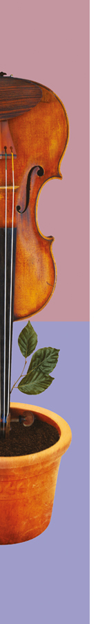
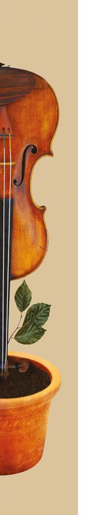

FLÛTES - HAUTBOIS - CLARINETTES - BASSONS - SAXOPHONE - TROMPETTES - TROMBONES - CORS - TUBA
FLÛTES
ANAÏS GUIMARD
Anaïs Guimard à étudié au C.R.R de Versailles dans la classe de Jean-Michel Varache, au C.R.R de Paris dans la classe de Vincent Lucas ainsi qu'à l'Académie Supérieur de Musique de Strasbourg aux côtés de Mario Caroli. Elle travaille dans différents orchestres (Orchestre d'Auvergne, Orchestre Ellipse, Orchestre Cinématographique de Paris, Sinfonia Pop Orchestra, ...).
Depuis 2017, elle enseigne la flûte traversière au Foyer Rural d'Orcines, les Écoles de Musique de la Plaine Limagne à Randan et Maringues, à l'Ecole de Disque de Lezoux et participe au projet DÉMOS de Clermont-Ferrand.
Membre de l’O.S.D. depuis 2018.
NICOLAS BERBAIN
Nicolas Berbain enseigne la flûte traversière à l'école de musique d'Aulnat et au sein du projet DEMOS-Clermont-Ferrand. Il débute la musique dans la Nièvre avant d'étudier auprès de Christel Rayneau, Vincent Lucas puis Pierre Dumail dans les C.R.R. de Versailles et Paris. Il apprécie tout particulièrement la musique de chambre en quatuor avec flûte et se produit dans diverses formations.
Membre de l’O.S.D. depuis 2020.
CHARLOTTE DUCHER
Charlotte Ducher obtient son D.E.M. de flûte au C.R.R. de
Clermont-Ferrand. Elle se perfectionne ensuite à Aix-en-Provence où elle acquiert un Diplôme d’État au Cefedem-Sud.
Elle enseigne depuis lors dans les écoles de musiques d’Ambert et des Martres-de-Veyre.
Membre de l’O.S.D. depuis 2016.
HAUTBOIS
Willy Bouche
WILLY BOUCHE
Après ses études au Conservatoire de Paris Willy Bouche, lauréat de concours internationaux, se perfectionne en Allemagne avec le soliste du philharmonique de Berlin, puis avec Maurice Bourgue, maître incontesté du hautbois.
Titulaire du D.E, il enseigne au Conservatoire de Cournon-d’Auvergne, au C.R.D. d’Aurillac et dans les Écoles de Musique de Cébazat et d’Ennezat.
Membre de l’O.S.D. depuis 2004.
Yves Cautrès
YVES CAUTRÈS
Titulaire d’un premier prix du C.N.S.M. de Lyon et du certificat d’aptitude à l’enseignement du hautbois, Yves Cautrès est professeur au C.R.R. de Clermont-Ferrand.
Il a été hautbois solo de l’orchestre de chambre La Follia
pendant 18 ans et membre du quatuor Poulenc.
Il mène une double carrière de professeur et de musicien
chambriste et d’orchestre.
Membre de l’O.S.D. depuis 2014.
Alain MARTY
Ingénieur agronome de formation et de métier, Alain Marty est venu à la musique par le chant choral.
Amateur passionné, Alain joue dans plusieurs formations de la région : l’Orchestre Symphonique des Dômes et l’Orchestre Universitaire, ainsi qu'en musique de chambre avec la toute jeune « Ruche Baroque » et le quatuor Connivences.
Membre de l’O.S.D. depuis 1989.
CLARINETTES
SOPHIE DOPEUX
Sophie Dopeux a obtenu son D.E.M. à Vichy dans la classe de Joël Jorda ainsi que son D.E. au Cefedem de Lyon.
Elle enseigne la clarinette dans les écoles municipales de musique d’Ambert, de Royat et de Lempdes.
Membre de l’O.S.D. depuis 2016.
MÉLINE SOURJAC
Méline débute la clarinette à l'âge de 6 ans. Elle entre au C.R.R. de Clermont-Ferrand dans la classe de Béatrice Berne en 2018 et obtient son D.E.M. en 2021. Elle enseigne la clarinette depuis 2019 dans les écoles de musique de Lempdes et Pont-du-Château.
Membre de l’O.S.D. depuis 2021
Méline Sourjac
JOËL JORDA
Premier prix du conservatoire de Villeurbanne, JOËL JORDA obtient un diplôme d’État au Cefedem de Lyon.
Il enseigne aujourd’hui au C.R.D de Vichy et se produit en tant que soliste dans la saison culturelle de la ville.
Il est par ailleurs fondateur du trio Safed.
Membre de l’O.S.D depuis 2006
Joël Jorda
BASSONS
Julie Carles
JULIE CARLES
Julie Carles a fait ses études de basson dans la région parisienne où elle obtient le premier Prix de la Ville de Paris.
Titulaire du D.E., elle enseigne le basson à l’École de Musique de Chamalières.
Membre de l’O.S.D. depuis 2006.
THOMAS PEYRONNET
Thomas Peyronnet a étudié le basson au C.R.R. de Clermont-Ferrand dans la classe d'André Clerc.
Musicien éclectique il se dirige vers les percussions classiques et la batterie jazz au C.R.R. de jazz de Chambéry dans la classe de d'Antoine Brouze.
Depuis il varie les plaisirs dans différentes formations au basson ou à la batterie.
Il enseigne les percussions à l'école municipale de musique d'Ambert.
Membre de l’O.S.D. depuis 2018.

TROMPETTES
VALERY NELLY
Valery Nelly a fait ses études musicales au Conservatoire de
Montluçon puis au Conservatoire de Villeurbanne dans la classe de Pierre Dutot où il obtient un 1er prix.
Titulaire du D.E., il enseigne dans les Écoles de Musique
d’Issoire et d’Ennezat et participe à différentes formations.
Membre de l’O.S.D. depuis 2000.
CHRISTOPHE PEREIRA
Christophe Pereira obtient une médaille d’or au Conservatoire de Clermont-Ferrand.
1er Prix du concours de la ville de Paris, il est membre du quatuor “Carré Cuivres” et collabore régulièrement avec l’Orchestre d’Auvergne.
Il dirige actuellement l’École de Musique de Chamalières.
Membre de l’O.S.D. depuis 2000.

TROMBONES
VINCENT BELLIER
Vincent Bellier fait ses études musicales avec Abel Thomas au Conservatoire de Clermont-Ferrand. Il travaillera ensuite avec Alain Manfrin dans un conservatoire d’arrondissement parisien.
Il enseigne actuellement à l’Écoles de Musique d’Ennezat – RLV.
Membre de l’O.S.D. depuis 2022.
GILLES DUCROS
Gille Ducros a fait ses études de trombone au conservatoire de Clermont-Ferrand puis de Nice.
Professeur de trombone à l’école de musique Allier Comté Communauté de 2006 à 2017.
Il a participé à la naissance de l’orchestre en 1984 puis aux Ateliers Concerts.
Membre de l’O.S.D. depuis 1984.

CORS
François-Emmanuel André
FRANÇOIS-EMMANUEL ANDRÉ
François-Emmanuel André a fait ses études à Paris où il a obtenu un 1er prix de cor dans la classe de Georges Barboteu, puis une médaille d’or au C.N.R. de Rueil-Malmaison.
Titulaire du D.E., il enseigne tout d’abord au Conservatoire de
Clermont-Ferrand puis au Conservatoire d’Aurillac.
Membre de l’O.S.D. depuis 1994.
Nicolas Gouilloux
NICOLAS GOUILLOUX
Nicolas Gouilloux fait ses études au C.N.R. de Lyon où il obtient une médaille d’or de cor et de musique de chambre.
Titulaire d’une maîtrise de musicologie, il enseigne le cor dans les Écoles de Musique de Cébazat et de Gannat.
Membre de l’O.S.D. depuis 2006.
Bénédicte Roussel
BÉNÉDICTE ROUSSEL
Après une licence de musicologie à Saint-Etienne, Bénédicte Roussel obtient son D.E.M. de cor en 2012 au CRR de Clermont- Ferrand.
Titulaire d’un D.E. de Cor et de Formation Musicale obtenus au C.E.F.E.D.E.M. de Lyon en 2017, Bénédicte enseigne aujourd'hui le cor et la formation musicale dans les Écoles de Musique de l'Agglo Pays d'Issoire et Ennezat (Riom Limagne et Volcans), ainsi qu'au CRR de Clermont-Ferrand.
Membre de l’O.S.D. depuis 2021.
Denis Colin
DENIS COLIN
Denis Colin a effectué ses études de cor à l'école de musique de Saint-Dié dans les Vosges puis à Brioude et à Cébazat.
Il a intégré plusieurs formations orchestrales dans les Vosges, en Auvergne et au Japon.
Musicien amateur, Denis occupe un poste de directeur qualité chez Michelin.
Membre de l’O.S.D. depuis 2022.
TUBA
Laurent Coste
LAURENT COSTE
Laurent Coste a fait ses études au Conservatoire de Rueil-Malmaison où il a obtenu le 1er prix de tuba.
Titulaire du D.E., il enseigne au Conservatoire de Cournon-d’Auvergne et participe à plusieurs orchestres et formations.
Membre de l’O.S.D. depuis 1993.